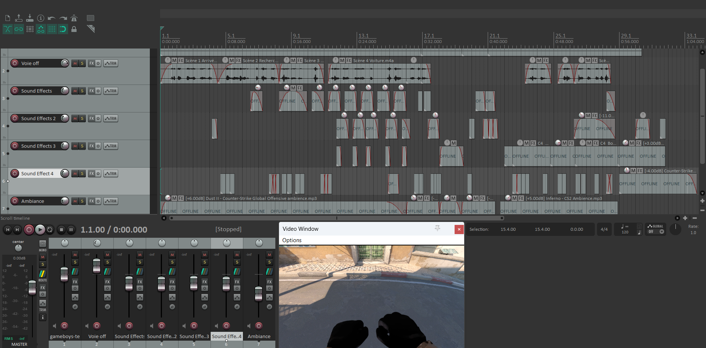
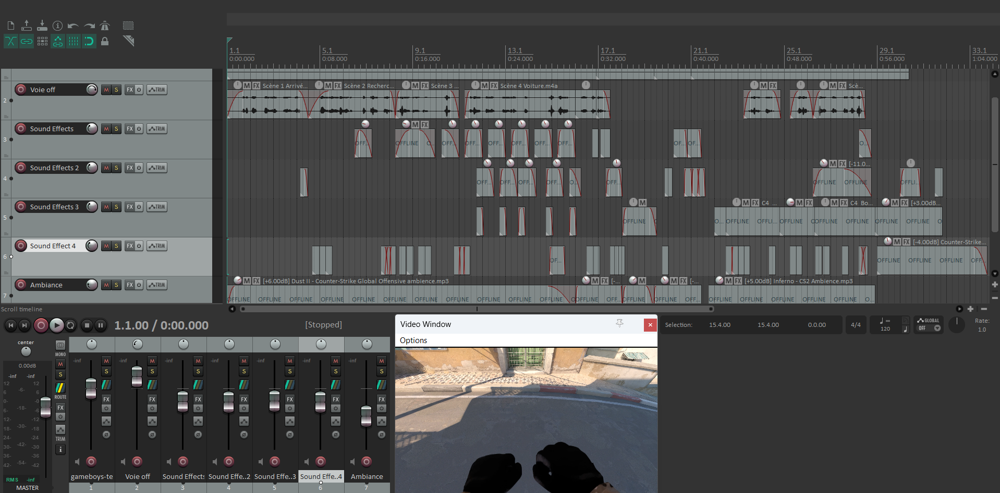
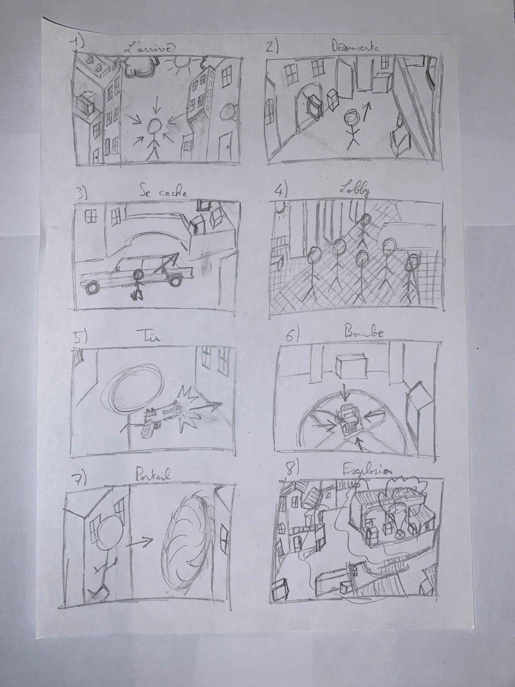
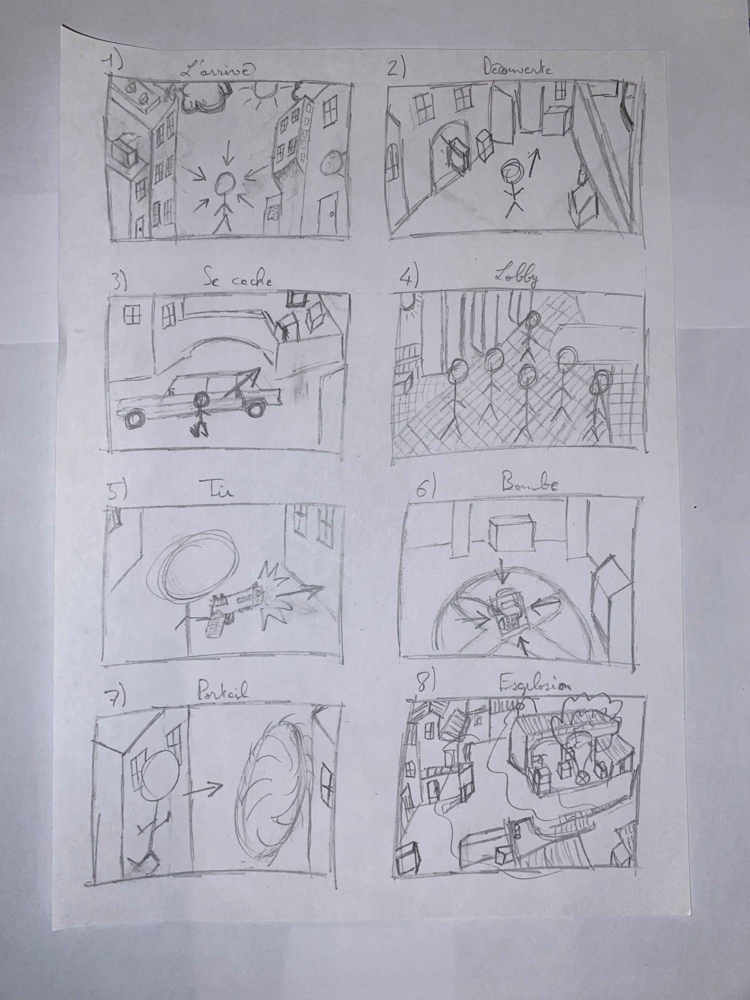

Lettre 1
Madame, Monsieur, Je vous recommande chaleureusement Monsieur Ian Bobinson, qui a travaillé au sein de notre entreprise en qualité de développeur spécialisé dans la création de séquences de jeux via Unreal Engine. Au cours de son engagement, Ian a démontré un professionnalisme exemplaire et une implication remarquable dans la réalisation de ses missions. Il s'est distingué par une grande qualité de travail, associée à une excellente capacité de collaboration et d'adaptation à notre environnement professionnel. Ses qualités relationnelles, combinées à son approche constructive et son esprit d'équipe, ont considérablement contribué au succès de nos projets communs. Ian s'est montré fiable, rigoureux et attentif aux besoins de ses collègues. C'est un professionnel sur lequel on peut compter, capable de progresser rapidement et d'apporter une contribution significative à tout projet auquel il sera assigné. N'hésitez pas à me contacter si vous souhaitez obtenir des précisions supplémentaires.


 

 
